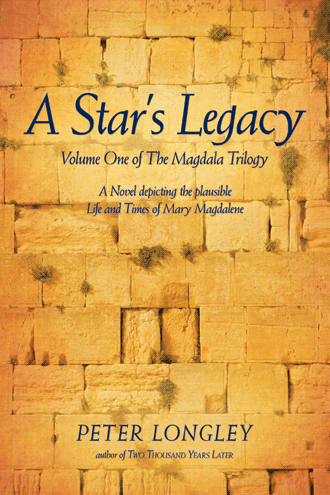
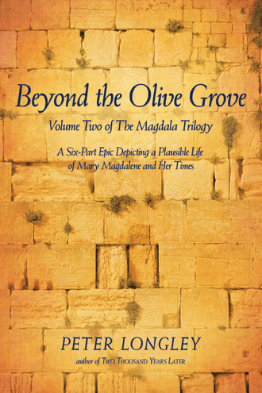
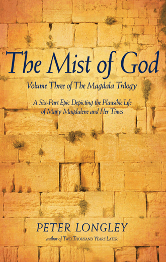

Welcome to my website!
I'm Peter Longley, author of The Cedars of Beckenham, an intriguing British and American novel of the twentieth century that is a family saga with a holocaust theme, Twenty-Five Years Before the Mast-A Cruise Director Looks Back, a memoir based on my years as cruise director on some of the world's most luxurious cruise ships, Orbit: Life with My People, my late Great Pyrenees dog's autobiography written entirely from the dog's point of view, FForsythia, a memoir of my family from the 1880s to the 1970s that hangs on a precis of John Galsworthy's famous Forsyte Saga exploring the rise and fall of the British Empire and the rise and fall of the British upper-middle class, The Magdala Trilogy: A Six-Part epic depicting a Plausible Life of Mary Magdalene and Her Times, my award-winning novel Love is Where Your Rosemary Grows that tells of the different loves for a mother and her daughter as the mother fights with cancer, and my first novel set on a world cruise with an incarnational theme, Two Thousand Years Later. I am also the author of several significant theological articles.
All my books are available at www.amazon.com Click on Amazon's Books and type in the title.
Most of the books are also available on this website under Order on left hand side of this page.
Reader's Comments and Reviews on all the books can be found under Reviews on the left hand side of this page.
About the Author
Peter Longley graduated with a master's degree in theology from Cambridge University in 1970. He was a licensed lay-reader and preacher in the Anglican Church both in Ireland and the United States. Brought up in England, Longley lived in Ireland from 1966-1977 where he was the estate manager of Tullamaine Castle. From 1977, he has lived in the United States in Georgia, Minnesota, and Missouri. From 1978-1998 he was a cruise director with Royal Viking Line and Cunard, where for ten years he was on the prestigious ocean liner, Queen Elizabeth 2. He started writing novels in 1989 and has ten published works. After retirement from cruise ships, he worked in horticulture as Horticultural Interpreter at the 114-acre Springfield Botanical Gardens, Missouri. In 2017 he retired and moved back to England.
About my book, THE CEDARS OF BECKENHAM
'The Mystery of an Antique German Doll reunites members of a family torn apart during the Third Reich of Nazi Germany'
This historical fiction family saga, starting in the leafy suburb of Beckenham on the borders of Kent and London, begins in 1930 in the comfortable world of four British upper-middle class families blind to the impending changes that are about to threaten not only their world, but everyone else's world, too.
A doll belonging to the Abuthnott family becomes the catalyst that brings together two sides of the Rubenstein family, who were able to escape from Germany in the late 1930s finding refuge in the United States of Amarica and in the British Mandate of Palestine.
Along the way, the horrors of the Blitz and the British struggle for survival are enacted out against the parallel Germanic horror of holocaust separation. The survivors in the United States, Great Britain and Israel adapt to a new world as it unfolds through the second half of the 20th century, until by the chance sale of a German Biedermeier doll at Sotheby's in New York, their separate paths are brought together in 2017.
The four Beckenham families adapt to their changing lifestyles witnessing a rich tapestry of 20th century social history taking the reader all over the world with its beauty, passion and prejudices.
About my book, TWENTY-FIVE YEARS BEFORE THE MAST: A Cruise Director Looks Back
From 1978 to 2003 Peter Longley was a cruise director and lecturer for twenty-five years on some of the best known luxury ships of the second half of the twentieth century, including ten years aboard Cunard's famous ocean liner Queen Elizabeth 2.
Peter Longley fell into the industry by accident in 1978, at a time when it could be said that cruising was exclusively for the rich and famous. Longley traces this form of travel from its imperial; passengers sailing the lifelines of empires to the fabulous world cruises that attracted eccentric passengers. Here, life and challenges both above and below decks are explored on these floating cities at sea that still hold myths of the past as they leap into the future.
From gala buffets to labor disputes, from entertaining royalty to evacuation at sea, Longley takes you there. You will go from dry docks to exciting ports of call, interspersed with anecdotes of an extraordinary lifestyle. You will also witness murder at sea, stowaways, and the sorting of garbage.
See how technology changed shipboard pastimes, and how the jet plane changed itineraries and entertainment, and how the computer changed everything. Finally, take a look at cruising today with over four hundred ships plying the seven seas. Learn how a few corporations now run the industry, and vacations range from voyages on mass-market mega ships to luxury river cruises.
About my book, FORSYTHIA
Encased within the drama of John Galsworthy’s The Forsyte Saga, Peter Hovenden Longley weaves an autobiographical reminiscence of his own English family from the 1880s to the 1960s. Brought up in the last days of Forsythia, a world of the 3 percent born in privilege to serve the British Empire, Longley celebrates his family’s lost generations. Nothing—neither the abdication of the King Emperor Edward VIII in 1936 nor Adolf Hitler’s relentless bombs—could shake the British people’s conviction that theirs was the eternal kingdom. Blindly, they believed that after a good cup of strong, Indian tea and a game of croquet on the lawn, Forsythia would go on forever.
But in the aftermath of the Boer War,the Irish rebellion, the Great War, and the rise of socialism, even the faith of most stalwart champions of the empire would be shaken. Forced to accept that the world they once loved was changing around them, Longley’s family and their peers struggled to adapt to a new reality. As a living witness to his family’s history, Longley takes the reader through the Second World War, the independence and division of India, and the gradual dissolution of the empire itself.
With the permission of the Galsworthy estate, Longley analyzes The Forsyte Saga and reflects on the impact of this work of literature. His was the last generation of Forsytes, witnesses to those final rays that filtered across the empire on which they all thought the sun would never set.
About my book, ORBIT: Life with My People.
“Orbit is not just a dog; he’s a spiritual being…” Yakov Smirnoff.
Orbit was a Great Pyrenees who touched many people all over the world. He was born in a log cabin in the Ozarks and was adopted by a self-sufficient community. Within the community, he adopted Bettine and Peter, whose property, Alpha Meadows, became his kingdom. His life was filled with a lot of happiness in an idyllic setting, but set against a back story of fear and pain.
His ability to sing to Bettine’s flutes, took him in film around the world on concert tours where his spirit moved international audiences.
His circumstances at home, and his compassion for his people, caused him to develop his unique canine understanding, which was confirmed for him when he went over the rainbow bridge.
Here, he reveals his wisdom in living the unconditional love of animals, despite all the complexes of their human companions. Orbit’s was a good life; he spread a message. Just be glad that he lived!
About my book, Forsythia:
Encased within the drama of John Galsworthy’s The Forsyte Saga, Peter Hovenden Longley weaves an autobiographical reminiscence of his own English family from the 1880s to the 1960s. Brought up in the last days of Forsythia, a world of the 3 percent born in privilege to serve the British Empire, Longley celebrates his family’s lost generations. Nothing—neither the abdication of the King Emperor Edward VIII in 1936 nor Adolf Hitler’s relentless bombs—could shake the British people’s conviction that theirs was the eternal kingdom. Blindly, they believed that after a good cup of strong, Indian tea and a game of croquet on the lawn, Forsythia would go on forever.
But in the aftermath of the Boer War,the Irish rebellion, the Great War, and the rise of socialism, even the faith of most stalwart champions of the empire would be shaken. Forced to accept that the world they once loved was changing around them, Longley’s family and their peers struggled to adapt to a new reality. As a living witness to his family’s history, Longley takes the reader through the Second World War, the independence and division of India, and the gradual dissolution of the empire itself.
With the permission of the Galsworthy estate, Longley analyzes The Forsyte Saga and reflects on the impact of this work of literature. His was the last generation of Forsytes, witnesses to those final rays that filtered across the empire on which they all thought the sun would never set.
About my book,A Star's Legacy:
Volume One of The Magdala Trilogy:
A Six-Part Epic Depicting a Plausible Life of Mary Magdalene and Her Times.
In 5 B.C. a star appears mysteriously in the Middle Eastern sky, and three people are born under its aspect: Joshua of Nazareth, Linus Flavian, and Maria of Magdala—A Star's Legacy. At the time of their birth, superstition is rife. Intrigue between High Priests, the Herodians, and Rome, along with hope in an expanding world of greed and commerce, gives shape to their diverging but intertwined destinies. Action takes the reader from Jerusalem and the hillsides of Galilee to the Jewish world of Alexandria, the trading centers of Petra and Palmyra, and the magnificence of Rome. Surrounded by slavery and rebellion and immersed in their own adolescent dreams, the lives of Joshua, Linus, and Maria unfold in a vast canvas covering the length and breadth of the Roman world.
The Magdala Trilogy provides a fascinating commentary on the origins of Christianity. Who was Jesus' father? Was Jesus married? Was the Messiah divine? Where were the seeds of his message sown? Has that message come down to us in Christian orthodoxy or was it something else? Could Mary Magdalene have been the guardian of a different message? Was Mary Magdalene a lesbian? Did Jesus have a son?
These questions are all explored in an epic that traverses the trade routes of the Ancient World, mingling Roman, Greek, Jewish, Persian, and Indian thought and philosophy in a quest to better understand Mary Magdalene and her times. A Star's Legacy and its sequels are both challenging and yet plausible, incorporating traditional beliefs, fictitious thoughts, and new controversial interpretations. With vivid prose and compelling characters, A Star's Legacy offers a captivating glimpse into Biblical times.
About my book, Beyond the Olive Grove:
Volume Two of The Magdala Trilogy:
A Six-Part Epic Depicting a Plausible Life of Mary Magdalene and Her Times.
Joshua, Maria, and Linus Flavian determine their destinies. From the Nazirite and Essenic sects to the burgeoning fishing industry on the Sea of Galilee, Joshua and his band of followers are led from obscurity to the portals of the Roman prefect in a movement poised to change the world. They are members of a healing ministry that concerns the Jewish authorities that are striving for survival and security under the umbrella of Rome.
Accidentally, Maria of Magdala becomes a part of this movement, and is left with an awesome responsibility. Linus Flavian pits Roman pride and ambition against a Galilean past.
The second in the dramatic new series, The Magdala Trilogy, Beyond the Olive Grove provides a fascinating commentary on the origins of Christianity that is both challenging and yet plausible, incorporating traditional beliefs, fictitious thoughts, and new controversial interpretations. With vivid prose and compelling characters, Beyond the Olive Grove offers a captivating glimpse into Biblical times.
About my book The Mist Of God:
Volume Three of The MagdalaTrilogy:
A Six-Part Epic Depicting the Plausible Life of Mary Magdalene and Her Times.
With vivid prose and compelling characters, The Mist of God offers a captivating glimpse into Biblical times providing a fascinating commentary on the origins of Christianity that is both challenging yet plausible, incorporating traditional beliefs, fictitious thoughts, and new controversial interpretations.
The destinies of Linus Flavian, Maria of Magdala, and their son, Marcus, play out in this dramatic first-century story that spans the extremities of the known world of that time, from Britannia to India. The Roman Empire is rising to its height while a fledgling religious sect of Judaism reconciles itself with the mystery of its crucified leader, Joshua of Nazareth. Growing from a clash between nationalistic Judaism and a messianic universalism, followers from Saul of Tarsus to Simon Cephas take the fledgling faith out to the Gentile world on the trading routes of the House of Arimathea.
Their witness, however, differs from the very personal understanding of divinity that Maria believes she learned from her lover, the crucified Lord. Nevertheless, she passes this legacy on to her son Ben Joshua, the child Joshua never knew. Ben Joshua finds this message enhanced when he travels to India as a partner in the House of Arimathea-but his survival is anything but certain.